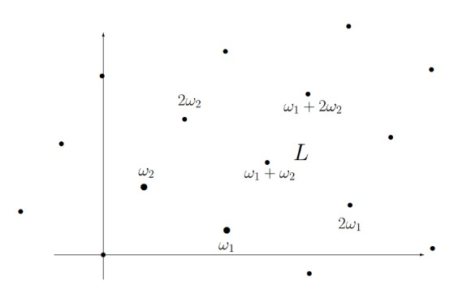

No siempre es posible visualizar una forma algebraica abstracta desde el punto de vista de nuestras referencias geométricas cotidianas. El aspecto de una curva elíptica depende del campo \(k\) donde se encuentre definida.
Subsección3.4.1El plano afín y el plano proyectivo
Las curvas elípticas a menudo se estudian en el contexto de geometría algebraica, donde el plano afín y el plano proyectivo juegan roles fundamentales.
Subsubsección3.4.1.1El Plano Afín
El plano afín es un espacio geométrico que se asemeja al plano euclidiano, pero sin la necesidad de tener un origen fijo. En el plano afín, se pueden realizar operaciones vectoriales como suma y resta, pero no necesariamente multiplicación por escalares. Las transformaciones afines (traslaciones, reflexiones, etc.) son ejemplos comunes de transformaciones en el plano afín.
El plano afín se denota comúnmente como \(\mathbb{A}^2\text{,}\) que representa el conjunto de todos los puntos en el plano con coordenadas reales.
En el plano afín \(\mathbb{A}^2\text{,}\) una curva elíptica puede representarse por una ecuación polinómica como (3.3.1). Por ejemplo, la curva elíptica \(y^2=x^3-3x+4\text{;}\) donde \(a =0\) y \(b=3\text{.}\) Un punto de la curva podría ser: \((2,3)\text{;}\) ya que \(3^2=2^3-3 . 2 +4 \text{.}\)
Subsubsección3.4.1.2El Plano Proyectivo
El plano proyectivo \(\mathbb {P}^2\) se utiliza para manejar puntos en el infinito, lo que simplifica ciertos aspectos de la teoría de curvas elípticas. Introduce una notación homogénea y permite una mayor flexibilidad matemática. La ecuación homogénea asociada a una curva elíptica en el plano proyectivo puede ser de la forma \(Y^2Z=X^3-aXZ^2+bZ^3\text{;}\) donde \(X\text{,}\)\(Y\) y \(Z\) son coordenadas homogéneas.
El uso del plano proyectivo facilita el tratamiento de puntos en el infinito y permite un enfoque más uniforme en la aritmética de curvas elípticas. El plano proyectivo se puede ver como una “completación” del plano afín al agregar puntos a lo largo de las direcciones paralelas.
En el estudio de las curvas elípticas, la notación utilizada en el plano proyectivo a menudo se expresa como \(E(\mathbb{F}_q)\text{;}\) donde \(E\) es la curva elíptica y \(\mathbb{F}_q\) representa al cuerpo finito donde está definida.
En el plano proyectivo \(\mathbb {P}^2\text{,}\) se utilizan coordenadas homogéneas. La ecuación homogénea asociada a la curva elíptica \(y^2=x^3-3x+4\) sería: \(Y^2Z=X^3-3XZ^2+4Z^3\text{.}\) Un punto de esa curva elíptica en coordenadas homogéneas podría ser: \((X,Y,Z) = (1,3,1)\text{;}\) ya que satisface la ecuación: \(Y^2Z=3^2.1=1^3-3.1.1^2+4.1^3\text{.}\)
Las coordenadas homogéneas se escriben comúnmente como \((X:Y:Z)\text{;}\) en el caso específico de \((1,3,1)\text{,}\) se podría representar de la siguiente manera: \((1,3,1)
= (X:Y:Z) = (2:6:2)\text{;}\) hemos multiplicado todas las coordenadas por 2 para obtener una representación equivalente. En el contexto de las coordenadas homogéneas, cualquier múltiplo no nulo de las coordenadas representa el mismo punto en el plano proyectivo.
Es común no distinguir entre la curva afín definida por una ecuación de Weierstrass y su cierre proyectivo, que contiene exactamente un punto \(\mathcal
{O}\) adicional en el infinito; con coordenadas homogéneas: \([0:1:0]\text{.}\)
Si el discriminante de la ecuación de una curva elíptica: \(\triangle = 0\text{,}\) la ecuación define una curva suave (sin singularidades), en ese caso —si y solo si— el cierre proyectivo resulta una curva elíptica.
Subsección3.4.2En el plano real:
Siempre es posible visualizar la imagen de la traza (forma de la curva) de una curva elíptica \(E(\mathbb{R})\) en \(\mathbb{R}^2\text{;}\) la cual puede presentar dos componentes conectadas. El plano real es un plano afín, se puede considerar como un conjunto de puntos bidimensionales en el espacio euclidiano real; simples pares ordenados de números reales \((x,y)\text{.}\) Por ejemplo, el gráfico de la solución real (en números reales) de una ecuación elíptica expresada mediante la forma corta de Weierstrass: \(y^2=x^3+Ax+B\) [Subsección 3.3.1]; es una construcción simple que puede ser elaborada a “mano” (o con la ayuda de una computadora) por cualquier estudiante de matemáticas; Figura 3.3.
Subsección3.4.3En el plano complejo:
La “forma” de una curva elíptica \(E(\mathbb{C})\text{,}\) con coordenadas en \(\mathbb{C}\text{,}\) no tienen “forma” fácilmente visualizable en el sentido geométrico tradicional; suelen tener formas más abstractas y complicadas debido a la naturaleza de los números complejos y su estructura algebraica. Para facilitar la visualización y comprensión, a menudo se proyectan las curvas elípticas a un subconjunto bidimensional del espacio euclidiano real \(\mathbb{R}^2\text{;}\) donde podemos visualizarlas de una manera más ajustada a la intuición geométrica clásica; esta proyección implica representar los puntos complejos como pares ordenados de números reales.
Geométricamente hablando, en \(\mathbb{C}\) las curvas elípticas son isomorfas a un toroide -superficies topológicas con un agujero-, se presentan similares a un toro (‘dona’ o ‘rosquilla’; Figura 4.3); construidas de puntos que conforman una retícula.
Podemos formar un toroide mediante construcción geométrica a partir de dos números complejos \(\omega_1,\omega_2 \in\mathbb{C}\text{,}\) usándolos como dos lados de un paralelogramo, y luego identificar los lados opuestos (Figura 3.5). Los complejos \(\omega_1,\omega
_2\) son llamados períodos de \(E\text{;}\) definen un par de generadores, o períodos, de la retícula. Dos números complejos, \(\omega_1,\omega_2\text{,}\) que son independientes entre sí cuando se consideran como vectores en el plano complejo (linealmente independientes 1 ), sus partes reales e imaginarias sean números reales.
La curva elíptica en el campo de los números complejos, se puede ver como una superficie de Riemann. Esto se debe a que los números complejos proporcionan una estructura geométrica y algebraica que permite tratar las coordenadas complejas de la curva de manera suave y holomórfica; derivable en un conjunto abierto en el plano complejo. La holomorficidad es la extensión del concepto de diferenciabilidad en el contexto de números complejos. Una superficie de Riemann es una variedad compleja (una variedad diferenciable compleja) que localmente se parece al plano complejo.
Cuando se grafican los períodos complejos de una curva elíptica sobre el conjunto de números complejos \(\mathbb{C}\text{,}\) los ejes del sistema de coordenadas son la parte real (eje \(X\)) y la parte imaginaria (eje \(Y\)) de los números complejos que representan los períodos.
Los períodos reticulares se puede describir por la Ley de Grupo sobre \(E(\mathbb{C})\) como:
Figura3.5.Períodos complejos de una curva elíptica sobre \(E(\mathbb{C}\)); generadores del toroide (de la curva elíptica en sí).
La ecuación (3.4.1) define una retícula (red o enrejado) de punto regularmente espaciados en \(\mathbb{C}\text{,}\) que conforma un subgrupo de los números complejos. Para describir la Ley de Grupo geométrica, extendemos la red de los períodos de \(E\text{;}\) generando nuevos puntos.
Sage:3.4.1.Obtención de los períodos reticulares de una curva elíptica \(E\).
Algoritmo Sage utilizado para calcular los períodos reticulares asociados a una curva elíptica. [Nota A.5.3]. Los períodos reticulares se obtienen utilizando métodos específicos de la teoría de funciones elípticas y la aritmética compleja asociada a las curvas elípticas.

Figura3.6.Puntos generatrices del toro correspondiente a la curva elíptica \(E(\mathbb{C})\text{.}\)
En topología 2 , un toro está definido como una superficie cerrada, resultado del producto cartesiano de dos circunferencias unitarias (denotadas como: \(S^{1}
\times S^{1}\)), más estrictamente: una superficie cerrada orientable de género 1 (el género se refiere al número de agujeros que puede tener la figura 3 ).
\(S^{1}\)denota una circunferencia unitaria en el plano, es decir, un círculo de radio 1 centrado en el origen; cuyos puntos satisfacen la ecuación: \(x^2+y^2=1\text{.}\)
El producto cartesiano de dos circunferencias unitarias \(S^{1} \times S^{1}\text{,}\) implica emparejar cada punto de una circunferencia con cada punto de la otra; creando una malla o ‘tejido’ en el plano. Visualmente, se puede imaginar, como el emparejamiento de cada punto de una circunferencia con todos los puntos de la otra circunferencia; lo que formaría una especie de cuadrícula. La malla resultante tiene un contorno cerrado, ya que siempre puedes dar la vuelta y regresar al punto de partida. Esto hace que sea una “superficie cerrada”. El término ‘orientable’ significa que puedes asignar una orientación consistente a la superficie; es como darle una dirección a cada pequeña parte de la superficie de manera coherente. Visualmente, se puede imaginar como el emparejamiento de puntos en dos circunferencias y la creación de una malla que se enrolla alrededor de un toro.
Los períodos complejos de una curva elíptica son modulares. Existe una conexión profunda entre las curvas elípticas y las funciones modulares. Al mencionar esta conexión, es importante destacar que nos referimos a funciones específicas asociadas a las propiedades algebraicas de las curvas elípticas. Como antes mencionamos, esta conexión tiene importantes implicaciones en diversas áreas de las matemáticas, incluida la teoría de números y la criptografía. La conjetura de Taniyama-Shimura establece esa conexión y sus profundidades [3.5.1].
Es preciso resaltar que el toro isomorfo 4 a la curva elíptica \(E(\mathbb{C})\text{,}\) es solo una superficie bidimensional: \(T^2=S^{1} \times S^{1}\text{;}\) “es un toro cuadrático”. Como grupo abstracto, no sólo tiene el aspecto de \(E(\mathbb{C})\text{,}\) sino que es precisamente la curva elíptica \(E(\mathbb{C})\text{.}\) Su construcción no difiere matemáticamente de la forma geométrica-algebraica aditiva que usamos para generar la curva en \(R^2\text{.}\) La curva elíptica queda definida por los puntos finitos \(P\) de orden divisivo \(m\text{;}\) el toro \(S^{1} \times
S^{1}\text{,}\) con \(m \geq 1 \mid m \in \mathbb{Z}\text{;}\) con (\(m\) entero 5 ):
Figura3.7.Estructura reticular bidimensional «finita» de una curva elíptica \(E(\mathbb{C})\text{;}\) regularmente espaciada construida según la Ley de grupo \(L\text{,}\) por la extensión de los períodos \(\omega_1,\omega _2\text{.}\)
Nota3.4.2.Asociando la curvatura a la modularidad.
Retícula y Modularidad: Comencemos con la idea de la retícula generada por los períodos \(\omega_1\) y \(\omega_2\text{.}\) La modularidad significa que, al considerar combinaciones lineales de estos períodos, generamos puntos en la curva elíptica que son equivalentes en términos de la curva.
Trayectoria en el Espacio de la Curva: La modularidad permite que, al moverse en cualquier dirección a lo largo de la retícula, se esté cubriendo esencialmente la misma porción de la curva elíptica una y otra vez. Esto implica que, en el espacio de la curva elíptica, se puede viajar en cualquier dirección y, eventualmente, regresar al punto de origen.
Espacio Complejo (\(\mathbb{C}\)): La complejidad adicional proviene del hecho de que estamos trabajando en el espacio complejo (\(\mathbb{C}\)), donde los puntos son números complejos con partes real e imaginaria. Moverse en cualquier dirección en \(\mathbb{C}\) significa considerar combinaciones de ambos períodos \(\omega_1\) y \(\omega_2\text{,}\) lo que implica movimientos en dos direcciones (real e imaginaria) simultáneamente.
Representación Toroidal: La conexión con el toroide radica en que, al identificar lados opuestos de la retícula, estamos esencialmente ‘enrollando’ la curva elíptica alrededor de sí misma, formando una estructura que se asemeja a un toroide.
Subsección3.4.4El plano racional:
En 1922, L. J. Mordell plantó las bases de la llamada moderna teoría de las ecuaciones diofantinas. La solución de las ecuaciones polinomiales de Diofanto, usando números enteros o racionales: establece que todos los puntos \(k\)-racionales de una curva elíptica pueden generarse a partir de un número finito de ellos; lo que había sido conjeturado por Poincaré en 1901. Es decir, todas las soluciones racionales de una de aquellas ecuaciones cúbicas que estudiaba Diofanto pueden construirse a partir de un número finito de ellas; empleando una variación de su método de la secante y tangente.
El Teorema de Mordell; establece que el grupo de puntos racionales en una curva elíptica definida sobre los números racionales es finitamente generado. En otras palabras, si \(E\) es una curva elíptica definida sobre \(\mathbb{Q}\text{;}\) entonces el conjunto de puntos racionales \(E(\mathbb{Q})\text{,}\) forman un grupo finitamente generado.
Teorema3.4.3.Mordell (1922).
Sea \(E\) una curva elíptica dada por la ecuación:
\begin{equation}
E =: \{ y^2 = x^3 + Ax + B \mid A, B \in \mathbb{Q} \}\tag{3.4.3}
\end{equation}
Entonces el grupo de puntos racionales \(E(\mathbb{Q})\) es un grupo finitamente generado. Existe un conjunto finito de puntos \(P_1,\cdots,P_{(t)}
\in E(\mathbb{Q})\) tal que cada punto \(P \in E(\mathbb{Q})\) puede ser escrito de la forma: \(P=n_1 P_1 + n_2 P_2 + \cdots + n_t P_t\text{;}\) para algunas \(n_1,n_2,\cdots,n_t
\in \mathbb{Q}\text{.}\)
Una forma estándar del teorema de Mordell (extendido por Weil), especifica que el grupo abeliano \(E(\mathbb{Q})\) va a ser isomorfo al producto \(r\) veces de \(\mathbb{Z}\) multiplicado por una cierta cantidad de grupos finitos [24].
Al factor multiplicador \(r \geq 0\) se le conoce como rango de la curva; el rango es una invariante de isogenia; la isogenia es una relación de equivalencia 6 . El rango de una curva elíptica \(E\) definida sobre los números racionales (\(\mathbb{Q}\)) se denota como: \(r(E)\text{,}\) y se refiere al número de generadores independientes en el grupo de puntos racionales \(E(\mathbb{Q})\text{.}\) En otras palabras, si \(P_1, P_2, \cdot \cdot \cdot , P_r(E)\) son puntos racionales independientes en la curva, entonces el rango es el número \(r(E)\text{,}\) que puede ser finito o infinito. El “rango” de una curva elíptica es una medida de la cantidad de puntos racionales en la curva.
Torsión de una Curva Elíptica.
Se refiere a la parte de la curva que tiene puntos con coordenadas racionales (los \(k\)-racionales); aquellos puntos cuyas coordenadas pueden expresarse como fracciones enteras. El teorema de Mordell establece que para una curva elíptica definida sobre los números racionales (Teorema 3.4.3), el conjunto de puntos \(k\)-racionales en la curva forma un grupo finitamente generado. La torsión de una curva elíptica es precisamente la parte del grupo de puntos racionales que tiene orden finito; estos son los puntos que, cuando se agregan a sí mismos repetidamente, eventualmente llegan al punto identidad del grupo.
La extensión de Mordell-Weil generaliza el teorema de Mordell al considerar una curva elíptica definida sobre un cuerpo de números \(K\text{,}\) donde \(K\) puede ser un campo de números finito, un campo de números algebraicos, o un campo de funciones; al grupo de puntos racionales finitamente generado, se agrega la suma directa de un grupo cíclico infinitamente generado (3.4.4).
La invariancia de la torsión, del rango y de otras propiedades de las curvas elípticas (bajo isogenia), son resultados importantes … y hermosos; que implican la comprensión de las propiedades estructurales de las curvas elípticas y de los grupos de torsión; proporcionando información sobre la estructura y el comportamiento de la curva en relación con los números enteros y racionales. Un área rica y profunda en la teoría de números y la geometría algebraica.
Existe una conexión directa con la multiplicación escalar, que se explica a través de la estructura de grupo de la curva elíptica; la ley de grupo en una curva elíptica permite sumar puntos de la curva y, por lo tanto, realizar multiplicación escalar.
Si la curva es singular (Nota 3.1.1), el teorema de Mordell no se puede aplicar; ya que \(E(\mathbb{Q})\) sería isomorfo a \(\mathbb{Q}\) con la suma (o a \(\mathbb{Q}^{\ast}\) con la multiplicación); los cuales no son grupos finitamente generados.
El estudio del grupo \(E(\mathbb{Q})\) ha desempeñado y continúa desempeñando un rol fundamentan en el desarrollo de muchas áreas de la teoría de número. Esta curva elíptica o grupo de puntos racionales \(E(\mathbb{Q})\text{,}\) es un subgrupo del grupo de puntos reales \(E(\mathbb{R})\text{.}\) No podemos obtener una buena imagen de \(E(\mathbb{Q})\) posicionándonos dentro de \(E(\mathbb{R})\text{.}\) Lo que si podemos hacer es graficar la imagen de los números racionales \(\mathbb{Q}\text{,}\) posicionándonos dentro del cuerpo de los números reales \(\mathbb{R}\text{.}\)
¿Cuántos generadores existen? ¿Necesitamos generarlos todos? y ¿Cómo encontrar un generador inicial? La respuesta a la primera pregunta aún no se conoce, pero los matemáticos están a mitad para resolverla. Respecto a las otras: El mecanismo de consecución de puntos mediante la «construcciones de secantes y de tangentes» permite probar que, la recta \(L\) corta a la curva \(E\) en tres puntos, y verificar: que si dos soluciones son números racionales, entonces la tercera solución (o punto de corte) también será un número racional como se muestra gráficamente en la Figura 3.8; o en la Subsección 3.3.3.
Cuando se verifica el sistema de ecuaciones (3.3.4), los puntos que corta la recta \(L: P,Q,R\) (con \(m\text{,}\)\(b\text{,}\)\(A\) y \(B\) números racionales), resulta que esos tripletes de puntos \(P,Q,R \) tienen coordenadas en números racionales (no enteros); lo que genera la interrogante: ¿por qué se obtienen soluciones racionales? …
Figura3.8.Usando la aritmética elíptica y el álgebra es posible verificar que: la recta \(L\) corta a la curva \(E\) en tres puntos. Igualmente permite corroborar que: si dos soluciones son números racionales, entonces la tercera solución (o punto de corte) también será un número racional; definido sobre un campo \(k\) subyacente cerrado algebraicamente.
En consecuencia, sobreviene una nueva pregunta ¿Hay infinitas soluciones racionales? ¿Cómo se pueden corroborar? Los teóricos y estudiosos de la teoría de números han adelantado respuestas parciales, pero aún andan buscando resultados concluyentes para estas y otras interrogantes referidas a las curvas elípticas. Una ecuación cúbica en dos variables puede no tener soluciones racionales, solo una solución racional, un número finito de soluciones o infinitas soluciones. Desafortunadamente, no conocemos ningún algoritmo que arroje todas las soluciones racionales de una ecuación cúbica, aunque existen algoritmos conjeturales [37].